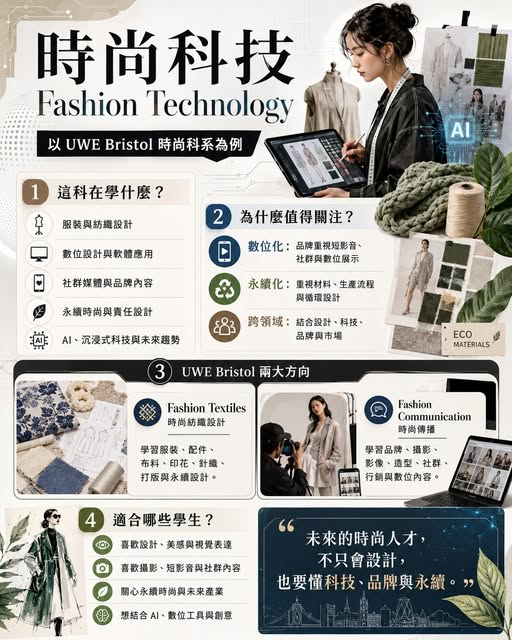

《看懂制度，選對世界》第一集
時尚科系：設計、數位工具與永續產業的結合
提到時尚產業，是令人驚豔的服裝設計、伸展台與精品品牌。從 AI 趨勢分析、數位印花、3D 打樣、永續布料、社群影像行銷，到品牌內容企劃，時尚正在快速走向科技化。

提到時尚產業，是令人驚豔的服裝設計、伸展台與精品品牌。從 AI 趨勢分析、數位印花、3D 打樣、永續布料、社群影像行銷，到品牌內容企劃，時尚正在快速走向科技化。因此，「時尚科技 Fashion Technology」成為近年國際設計教育中非常值得關注的方向。時尚科技是一門結合設計、美感、科技與產業應用的跨領域學科。
學生學的不只是服裝設計，也會接觸： 服裝與紡織設計 數位設計與軟體應用 社群媒體與品牌內容 永續時尚與責任設計 AI、沉浸式科技與未來消費趨勢 也就是說，學生不只學「如何設計一件衣服」，更要理解這件作品如何被製作、如何被看見、如何與品牌和市場連結。. 【全球時尚產業正在快速改變】 第一，數位化。品牌越來越依賴短影音、社群內容、線上活動與數位展示。第二，永續化。未來設計師必須思考材料來源、生產流程、廢料減量與循環設計。第三，跨領域化。時尚人才不能只懂美感，也要懂品牌、影像、消費者心理與數位工具。
因此，時尚科技培養的是能在「設計 × 科技 × 品牌 × 永續」之間整合的新型創意人才。. 【以 UWE Bristol 時尚科系為例】 的時尚相關科系，很適合作為理解時尚科技教育的例子。BA(Hons) Fashion Textiles 時尚紡織設計 這個課程重視服裝、配件、紡織品與室內紡織系列創作，並強調永續與數位化設計。
學生會學習服裝結構、布料印花、針織、刺繡、打版與未來時尚概念，也能在 Fashion Design、Textile Design、Fashion Textile Futures 等方向發展個人特色。適合喜歡動手創作、布料實驗、服裝結構與永續設計的學生。BA(Hons) Fashion Communication 時尚傳播 如果學生對品牌、攝影、短影音、社群、造型、行銷與內容企劃有興趣，Fashion Communication 會是很適合的方向。
這個課程訓練學生如何「說出時尚故事」，透過攝影、影像、藝術指導、平面設計、社群平台與數位內容，創造有影響力的品牌傳播作品。UWE 的 Fashion Communication 也納入 AI、沉浸式科技與數位平台應用，讓學生更接近當代時尚產業的需求。UWE 時尚科系的特色 重視作品集與實作能力 結合產業專案與專業實務 位於 Bristol 創意城市環境 提供數位設計、Adobe、VR、iPad 等創作資源 未來可銜接時尚設計、品牌、媒體、行銷、造型、攝影、內容製作與永續時尚等領域 適合哪些學生？
喜歡設計、美感與視覺表達 喜歡攝影、短影音與社群內容 喜歡服裝、布料與手作創作 關心永續時尚與未來產業 想把設計與 AI、數位工具、影像科技結合 希望未來進入國際時尚、品牌或創意產業 【結語】 未來的時尚人才，不只是會設計，也要懂科技、品牌、永續與市場溝通。UWE Bristol 的時尚科系，正好展現了這種國際設計教育方向：把創意、實作、科技與職涯能力放在同一條學習路徑中。對想走向國際時尚、設計、品牌與創意產業的學生來說，時尚科技是一個很值得認識的升學選擇。